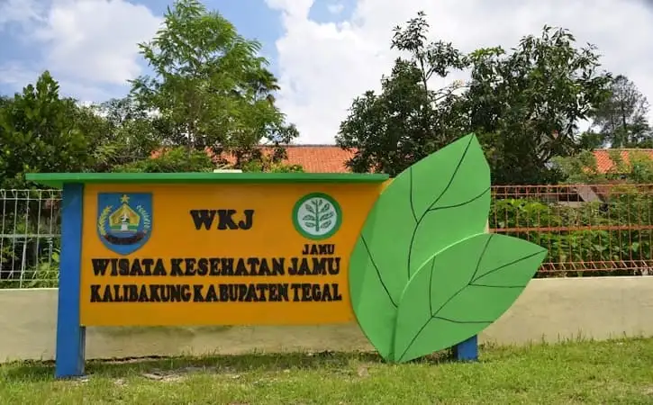

Wisata Kesehatan Jamu (WKJ) Kalibakung, Kabupaten Tegal
Jamu merupakan obat tradisional Indonesia yang dipakai sejak jaman dahulu dan sudah terbukti khasiatnya, tidak kalah dengan obat herbal impor yang selama ini membanjiri pasar Indonesia karena era perdagangan bebas.
Potensi alam Indonesia pun amat besar dengan keanekaragaman etnobotani (tanaman obat) yang dimiliki. Jamu sendiri adalah sebutan untuk obat tradisional dari Indonesia yang belakangan populer dengan sebutan herbal. Melalui pengelolaan dan langkah yang tepat, jamu yang dapat dikembangkan nilai kekayaannya mampu mendorong pengembangan ekonomi rakyat yang mendukung pertumbuhan ekonomi nasional. Sudah tentu ada keuntungan dari pemanfaatan jamu untuk kesehatan, meski ada berbagai upaya dengan begitu banyak penelitian tentang bahan jamu/ tumbuhan yang berefek mencegah atau menyembuhkan penyakit, dan berjalannya beberapa sentra penelitian yang meneliti bahan jamu/ tanaman berkhasiat bagi kesehatan, tampaknya masih perlu didorong ke arah terwujudnya jamu yang dapat digunakan masyarakat secara luas untuk kesehatan.
Kabupaten Tegal telah memiliki potensi untuk mewujudkan pelayanan kesehatan tradisional dengan menggunakan jamu. Konsep yang mewacana yakni pelayanan kesehatan jamu yang terintegrasi dengan program pariwisata yang telah ada. Di Kabupaten Tegal yaitu "Obyek Wisata Kalibakung" Kab Tegal dengan ketinggian kurang lebih 650 m di atas permukaan laut dengan luas lahan sebanyak 3,2 Ha.
Dengan melihat potensi yang ada, Pemerintah Kabupaten Tegal ingin mewujudkan konsep pelayanan kesehatan jamu yang terintegrasi dengan program pariwisata, kesehatan dan pendidikan melalui sebuah program yang diberi nama "WISATA KESEHATAN JAMU (WKJ) KALIBAKUNG KABUPATEN TEGAL. "
Dasar penyelenggaraan Wisata Kesehatan Jamu (WKJ) adalah :
1. Perda Kab Tegal No. 1 tahun 2013 tentang Penyelenggaraan Wisata Kesehatan Jamu (WKJ) dan Retribusi Pelayanan Kesehatan Tradisional Komplementer di Kalibakung Kabupaten Tegal.
2. Perjanjian Kerja Sama antara Bupati dan B2P2TO-OT (Balai Besar Pengembangan Penelitian Tanaman Obat dan Obat Tradisional) Tawangmangu.
Jam Buka
| Hari | jam |
|---|---|
| Minggu | Tutup |
| Senin | 07.00 - 11.00 |
| Selasa | 07.00 - 11.00 |
| Rabu | 07.00 - 11.00 |
| Kamis | 07.00 - 11.00 |
| Jumat | 07.00 - 10.00 |
| Sabtu | 07.00 - 10.00 |